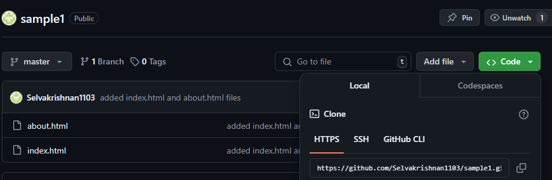

Git Mastery: Essential Commands and Best Practices
Introduction
Welcome to my blog! In this post, we'll dive into Git, a distributed version control system that has become an essential tool for developers. Whether you're a beginner or looking to refresh your knowledge, this guide will help you understand the basics, essential commands, and best practices of using Git.
What is Git?
Git is an open-source version control system created by Linus Torvalds in 2005. Unlike centralized version control systems, Git's distributed nature allows developers to work offline and have access to the full project history. Git tracks changes, facilitates collaboration, and manages the history of a project efficiently.
Why is Git Important?
Imagine you're working on a project with multiple contributors. Without a version control system, coordinating changes and managing versions can become chaotic. Git helps by keeping track of changes, preventing conflicts, and allowing multiple developers to collaborate smoothly.
Setting Up Git
How to Install Git
Windows: Download the installer from the official Git website and follow the installation instructions.
MacOS: Install Git using Homebrew with the command brew install git.
Linux: Use the package manager for your distribution, such as sudo apt-get install git for Debian-based systems or sudo yum install git for Red Hat-based systems.
Initial Configuration
Set up your username and email:
git config --global user.name "Name"
git config --global user.email "email"This configuration sets your name and email, which will appear in your commits.
Basic Git Commands
Here are some basic Git commands to get you started:
Initialize a new Git repository:
git initThis command creates a new Git repository in the current directory. It initializes the repository with a .git directory where Git stores all the metadata and object database for the project.
Clone an existing repository:
git clone "repo link"Cloning a repository means you are creating a copy of the existing repository in your local machine. This command downloads the project and its entire version history.

Stage changes for the next commit:
git add filename
git add .The git add command stages changes, adding them to the staging area. Using git add filename stages a specific file, while git add . stages all changes in the current directory.
Commit changes to the repository:
git commit -m "Commit message"Committing changes means recording the staged changes in the repository with a message describing the changes. This creates a new snapshot in the project history.
Show the status of changes:
git statusThis command displays the status of the working directory and staging area. It shows which files are staged, unstaged, and untracked.
Display the commit history:
git logThe git log command shows the commit history for the repository. It lists the commits in reverse chronological order, showing the hash, author, date, and commit message.
Working with Branches
Branches allow you to work on different parts of a project simultaneously.
Create a new branch:
git branch new-featureThis command creates a new branch named new-feature. Branches are pointers to commits and allow you to develop features or fix bugs in isolation from the main codebase.
Switch to a branch:
git checkout new-featureUse this command to switch to the new-feature branch. It updates the working directory to match the branch's state.
Merge a branch into another:
git merge new-featureThis command merges the changes from the new-feature branch into the current branch. Git automatically handles merging files unless there are conflicts.
Resolve conflicts manually when prompted by Git.
Remote Repositories
Link your local repository to a remote one:
git remote add origin "repo link"This command adds a remote repository named origin. Remote repositories are versions of your project hosted on the internet or another network.
Push your commits to the remote repository:
git push origin mainUse this command to push the commits from your local repository to the remote repository. This updates the remote repository with your local changes.
Create a local copy of a remote repository:
git clone "repo link"This command creates a local copy of a remote repository, including all branches, commits, and tags.
Best Practices
- Commit often with meaningful messages.
- Use branches for new features and bug fixes.
- Regularly push your changes to the remote repository.
- Pull changes from the remote repository frequently to stay updated.
- Review and resolve merge conflicts promptly.
Conclusion
Git is an essential tool for modern software development, enabling efficient version control and collaboration. By mastering Git commands and workflows, you can manage your projects more effectively and collaborate seamlessly with other developers. Happy coding!
Final Thoughts
"Version control is not just a tool but a way to improve your coding practices and collaboration skills."
Thank you for reading "Git Essentials: Your Ultimate Guide to Version Control"! I hope you found this guide helpful and informative. If you have any questions or feedback, feel free to leave a comment below or reach out through my contact page. Your support and engagement mean a lot!